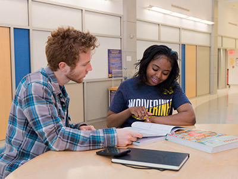
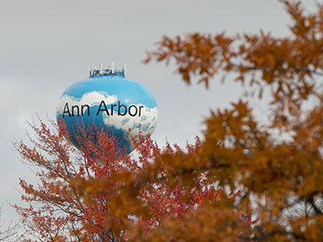

Introduction
We believe in ensuring fair and equitable access to food and essential resources. When everyone has what they need, our community thrives, and our students achieve greater success.
This website is designed to provide information about the resources available to students. It also serves as a platform for sharing data and research, helping the U-M community recognize the significance of this work for the entire campus.
Led by Student Life and supported by academic units and campus partners, this initiative continues to grow as new resources are identified and developed. We appreciate your patience as we expand this valuable resource.
Emergency Ride
Emergency Ride offers a free taxi service 24 hours a day, 7 days a week, to U-M faculty, staff, and students located on the Ann Arbor campus. Service may be requested for emergency situations involving personal or family illness/injuries, unscheduled overtime, mandatory work hours, or stranded carpool/vanpool riders.
Phone: (734) 763-1131
Webiste: Visit the Emergency Ride website
Food Gatherers
The Food Gatherers organization, founded by Zingerman’s Delicatessen, provides access to over 150 food partners throughout Washtenaw County. Use the online map/list to locate a food pantry or free meal distributor based on your need.
Phone: (734) 761-2796
Webiste: Visit the Food Gatherers website
Financial Aid Office
U-M’s Office of Financial Aid provides financial resources and support to undergraduate and graduate students. Resources include scholarships, grants, private student loans, short-term emergency loans, work-study opportunities, financial aid re-evaluation, and help with FAFSA applications.
Equity, Civil Rights, and Title IX – HR Reporting
Equity, Civil Rights, and Title IX (ECRT) is a vital resource for promoting diversity and equal opportunity at U-M. ECRT provides support for issues involving discrimination, discriminatory harassment or sexual misconduct, and can assist individuals with filing a complaint.
Webiste: Visit the Equity, Civil Rights, and Title IX – HR Reporting website
Careers at U-M
The University of Michigan career site provides a variety of employment opportunities, including professional, temporary and student jobs. Visit the website to search for open positions and apply.
Webiste: Visit the Careers at U-M website
Inter-Cooperative Council at Ann Arbor
The Inter-Cooperative Council of Ann Arbor offers low-cost student housing with shared common spaces and responsibilities for the home. Some food is included in the rental price.
Phone: (734) 662-4414
Webiste: Visit the Inter-Cooperative Council at Ann Arbor website